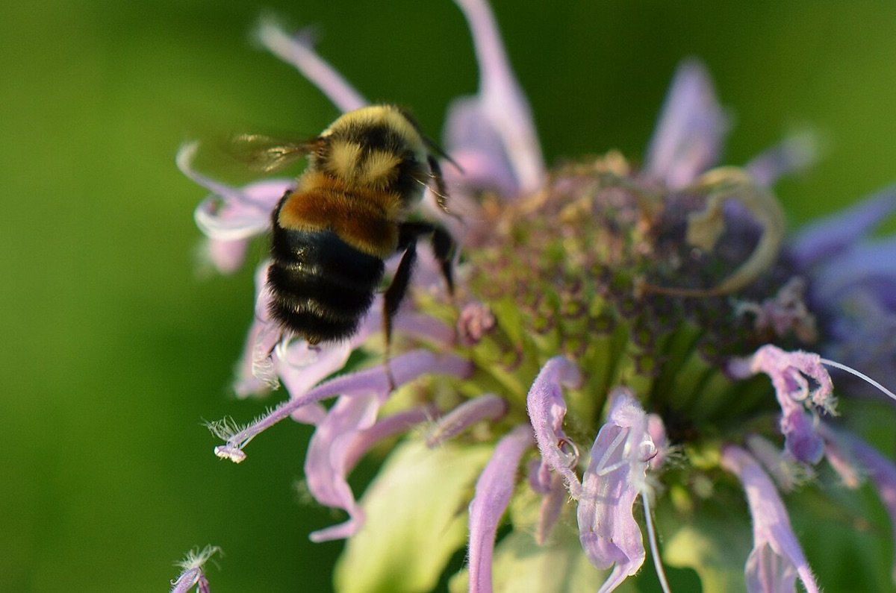

Rusty-patched Bumble Bee
Bombus affinis
- Kind
- insect
- Native to Vermont
- yes
- Legal status
- State and federally endangered (Atlas species table); apparently extirpated from Vermont since about 1999 (species page). The species page itself does not state the listing. (checked 2026-10-30)
- Look-alikes
- Lemon cuckoo bumble bee; Brown-belted bumble bee; Perplexing bumble bee; Half-black bumble bee
Pictures

Names
Rusty-patched bumble bee, Bombus affinis. A bumble bee once widespread in the East (Bumble Bees).
Range and habitat
Apparently extirpated from Vermont since about 1999, the year it was last observed here (species page). The Atlas species table lists it as state and federally endangered. Nests are underground. Food plants: sunflowers and their relatives, asters, goldenrods, honeysuckles, blueberries, cherries and buckeyes.
How to identify (by season; look-alikes and the key difference)
The page describes no marks; it lists look-alikes (lemon cuckoo, brown-belted, perplexing and half-black bumble bees) and a short tongue. A sighting would be significant: photograph the bee from several angles, with wings spread from above (Bumble Bees has the Atlas's photo advice), note the date and place, and use the Atlas's sighting report and tell Vermont Fish & Wildlife.
Through the year
No seasonal dates are recorded for this note yet.
General flight periods on the species page (for the species across its range): queens April to October, workers June to October, males July to October; the extreme dates recorded in Vermont were queens 1 May to 4 October, workers 5 July to 10 October and males 3 August to 23 October.
Signs on the land (tracks, scat, browse, nests, holes, calls)
None to look for beyond the bee itself.
Role in the forest (what it eats, what eats it, what it needs)
A pollinator of the flowers above. The species page names introduced parasites from imported commercial colonies and pesticide use, including small amounts on lawns and gardens, as threats.
What helps it thrive (light, soil, shelter, food and the trees it uses)
- A patchwork of habitats with flowers all season, and places to nest. Chapter 31 of the Guide (recorded in Pollinator Habitat on Forest and Field): keep forest, forest with sunny openings, wetlands and old fields with a mix of flowering plants; keep flowers on field edges, lawn edges and hedgerows; the plants bees favor include goldenrod, aster, willows, the blueberry family and dogwood, with maples, willows and apples key early in spring; leave bare or sparse, uncompacted soil, dead wood, pithy stems and slash for nests; limit pesticides, especially dusts, pellets and neonicotinoids and anything applied to flowers.
- For this group: the state and federally endangered species, apparently extirpated from Vermont; the sources read give no Vermont-specific need beyond the habitat and nest features above.
Managing for it (habitat practices) and living with it (conflicts and damage)
See Pollinator Habitat on Forest and Field; avoiding pesticides on flowering plants matters for every bee.
Legal status
State and federally endangered per the Atlas table. Do not collect or disturb.
Sources
- Vermont Atlas of Life, Rusty-patched Bumble Bee (Bombus affinis): https://val.vtecostudies.org/projects/bumble-bee-atlas/bombus-affinis/ (read 2026-10-30)
- Vermont Atlas of Life, Vermont Bumble Bee Species: https://val.vtecostudies.org/projects/bumble-bee-atlas/species/
- Vermont Fish & Wildlife Department, A Landowner's Guide, Wildlife Habitat Management for Lands in Vermont, chapter 31 (Bees and Other Plant Pollinators): https://vtfishandwildlife.com/sites/fishandwildlife/files/documents/Learn%20More/LandownersGuide/Landowner-Guide-Complete.pdf (read as text 2026-11-01)
What this page is based on
Kind of source: primary (Vermont Atlas of Life species page and species table, summarizing fetches)
What was read: Vermont Atlas of Life species page for Bombus affinis and the Atlas species table, read through summarizing fetches on 2026-10-30. The species page says 'apparently extirpated since about 1999' and does not state state or federal status; the listing is from the species table (state and federally endangered). The page gives no identification marks (only look-alikes and a short tongue), no last-update date and no reporting instructions beyond a site link. Search summaries said it was last seen in 1999 and that its habitat includes woodland; those were not on the page. Habitat needs added 2026-11-01 from chapter 31 of the Vermont Fish and Wildlife Landowner's Guide (read as text).
Last checked: 2026-10-30
Vermont Woodland Owner's Reference, built 2026-11-09. Rules and dates here are summaries, not legal advice; dates shift with elevation and year. Photo and recording credits · The text is by Loop Works, CC BY 4.0 (pictures and recordings keep their own licenses) · Note: _reference/US-VT/Species/Rusty-patched Bumble Bee.md